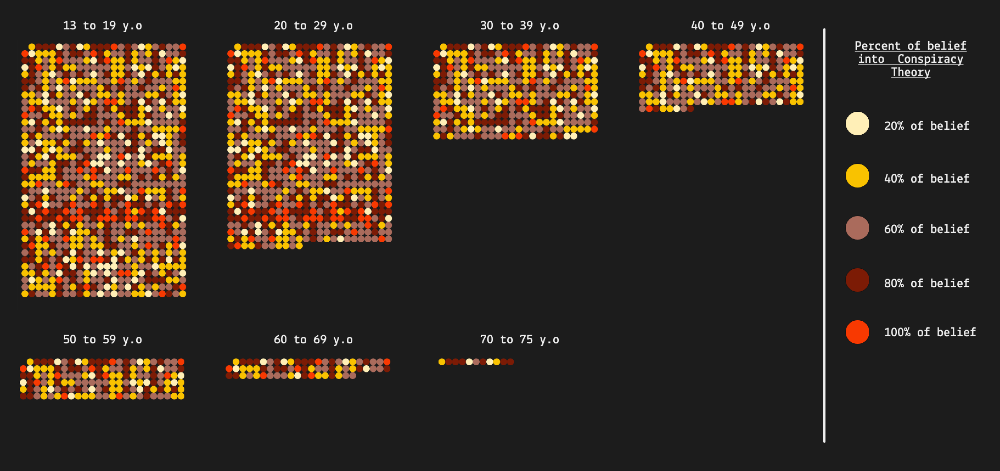

Conspiracy Theories
Internet et les réseaux sociaux ont permis un essor des communications. Les informations vont et viennent de plus en plus vite. Aujourd’hui il suffit de posséder un smartphone pour communiquer sur les réseaux sociaux. . Cette facilité de mise en ligne et cette rapidité permet à tout et à chacun de devenir son propre journaliste et de publier son avis, ses questions et ses interrogations.
Avant internet, c'était les médias qui avaient pour rôle d’informer la population. Ces informations étaient vérifiées et étudiées par des personnes, dont c'était le métier. Les informations étaient sûres.
Théorie des reptiliens, flatismes, Qanon, Apollo 13 un coup monté, le réchauffement climatique un mensonge et d’autres encore plus farfelus. Ces théories sont prises au sérieux par des personnes crédules et peu éduquées.
Ces théories sont dangereuses, outre de la désinformation elles peuvent conduire à des comportements dangereux. Une partie des américains est persuadée que c’est Donald Trump qui a gagné les élections en 2021, ce qui a déclenché des manifestations violentes et une intrusion dans le capitole.
Graph 1
Percent of belief into Conspiracy Theory classified by age group.
Lists of questions Q1 to Q15 + categories :
(The following theories are based on an American study and therefore on the American government)
(MM) the power held by heads of states is second to that of small unknow groups who really control world politics
(DF) secret organizations communicate with extraterrestrials, but keep this fact from the public
(BP) the spread of certain viruses and/ of the deliberate, concealed efforts of some organisation
(CI) groups of scientists manipulate, fabricate, or suppress evidence in order to deceive the public
(MM) small, secret group of people is responsible for making all major world decisions, sush as going to war
(DF) evidence of alien contact is being concealed from the public
(BP) technology with mind-control capacities is used on people without their knowledge
(CI) new and advanced technology which would ham current industry is being suppressed
(MM) certain significant events have been the result of the activity of a small group who secretly manipulate world events
(DF) some UFO sightings and rumors are planned or staged in order to distract the public from real alien oontact
(BP) Experiment involving new drugs or technologies are routinely carried out on the public without their knowledge or consent
(CI) A lot of important infromation is deliberately concealed frim the public
CI : Information control
Graph 2
Percent of belief into Conspiracy Theory of people aged 15 to 19.
Graph 3
Percent of belief into Conspiracy Theory number 4 of the survey (disease / virus)